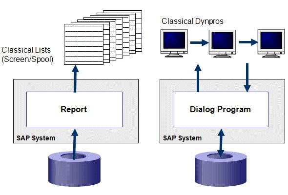
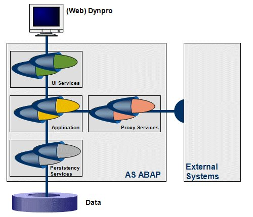

AS ABAP Release 754, ©Copyright 2019 SAP SE. All rights reserved.
ABAP Keyword Documentation → ABAP Programming Guidelines → General Rules →Separation of Concerns
Background
The term 'separation of concerns' (SoC) was coined in Edsger W. Dijkstra's article On the role of scientific thought from 1974:
"... But nothing is gained --on the contrary!-- by tackling these various aspects simultaneously. It is what I sometimes have called 'the separation of concerns', which, even if not perfectly possible, is yet the only available technique for effective ordering of one's thoughts, that I know of. This is what I mean by 'focusing one's attention upon some aspect': it does not mean ignoring the other aspects, it is just doing justice to the fact that from this aspect's point of view, the other is irrelevant." (Springer-Verlag, 1982)
Separation of concerns is a principle used in programming to separate an application into units, with minimal overlapping between the functions of the individual units. The separation of concerns is achieved using modularization, encapsulation and arrangement in software layers.
Although the classic three-layer architecture of Application Server ABAP (AS ABAP) is ideal for ABAP programming based on the SoC principle, this possibility was never explored. Application programs (in other words, dialog programs in module pools or reports in executable programs) were usually displayed as monolithic blocks, in which the system simultaneously reacted to user actions of the presentation layer, completed the application logic and executed accesses to data on the persistency layer. This type of programming is no longer relevant in today's programming world, where concepts like service-oriented architecture (SOA) set the trend.
Rule
Follow the SoC principle
Follow the separation of concerns principle. Model your applications strictly as service-oriented applications. It is especially important that you separate the logic of the application from the logic of the presentation logic, persistency, and the logic for communication with external systems. Encapsulate the repository objects of the individual concerns in separate packages.
Details
The SoC principle identifies the parts of an application with a specific purpose and encapsulates these parts in closed units. These units only communicate with each other using specified interfaces. Thanks to this principle, the software - which would have otherwise been overcomplicated - is divided up into manageable components. As a result, the software is:
Regarding the last point, it would even be true to say that following the SoC principle is a prerequisite for executing isolated, automated unit tests.
Bad Example
The following graphic shows two examples of an ABAP application that do not follow the SoC principle.

In fact, the two bad examples here are the programmer models for reporting and dialog programming that were propagated by SAP for a considerable length of time! To be more precise, the example is not bad due to the reporting or programming of transactions itself, but due to the way in which these applications are usually implemented. The mini report in the following source code is a typical example of how different concerns are mixed together in a single program unit. Both the data declarations and the implementation of the functions are mixed together. Access to persistent data, data processing, data presentation and the associated declarations all occur in one single unit.
Of course, it would be too much to insist that concerns should be completely separated even in short programs like in the source code above. However, real applications are usually very long ABAP programs (executable programs, module pools), in which all concerns are handled at the same time. If modularization was performed, it was usually restricted to reusing functional units and was rarely focused on the actual available layers. In addition, large volumes of global data were usually created that were used in different procedures and layers. As a result, all the parts of the program were inherently dependent on each other and could not be tested individually. We are convinced that the quality of these programs can be improved not only by following naming conventions, but also by changing the paradigm for the procedure used for programming tasks.
The following source codes proves that you can implement the SoC principle using classic ABAP procedural methods (in this case, subroutines). This source code works in the same way as the source code above. However, all the concerns are implemented in separate procedures that are assigned to layers. As we have already mentioned, this type of implementation would be too much for a simple program. However, if you needed to test the concerns in the above source code individually and independently of each other by using unit tests, the only possibility would be to adapt the source code as shown below. The program of the following source code can now be easily assigned test methods in ABAP unit test classes, which test the individual procedures.
However, this separation of concerns using subroutines shown above does not create a good impression. The following source code shows how the separation of concerns should be implemented instead using methods in concern-specific classes.
Good Example
The following graphic shows how an ABAP application should look that follows the separation of concerns.

After the concerns have been identified, they are implemented in ABAP object classes. The concerns shown in the graphic are the main tasks that are usually performed in ABAP application programming:
These main rules can be subdivided further, which is often necessary.
The boxes for the individual concerns in the graphic represent packages. All the repository objects (classes, data types) belonging to a concern should be located in corresponding packages. The package concept (encapsulated packages) supports this separation of concerns. In encapsulated packages, repository objects in one package can only access the objects of another package using package interfaces, which is checked by the syntax check. A package can restrict the usability of its repository objects even more by using access control lists. Subdividing the separation of concerns in a package is a concept supported by subpackages.
For example, encapsulating all database tables of an application in a package for persistency services prevents any program, that does not belong to this package, from accessing these database tables. The reverse is also true. For example, programs in the persistency layer cannot communicate directly with components in the presentation layer, such as a Web Dynpro ABAP application. You should prepare the package encapsulation (by choosing Package Check as Server) in the package properties. These packages have package interfaces, A package check is performed during the extended program check.
The following source code shows how to adapt the separation of concerns from the above source code for classes local to the program.
At first glance, the above source code appears to be very excessive compared to the first source code. But only on the first glance. A real application program usually only consists of 25 lines. The larger and more realistic the application program, the smaller the proportion of the overhead that is incurred by wrapping the concerns in classes. If the reuse options for ABAP Objects are used appropriately, it is even possible to reduce the amount of source code.
In addition, the individual steps are now wrapped in classes, in other words, real program units (unlike in the second source code). In practice, wrapping is not performed in one single program, but in global classes that are assigned to different packages, depending on the layer. These packages are connected to each other using package interfaces. It is only by using these interfaces that you can achieve the other benefits of separating the concerns (in addition to the testing capability achieved in the second source code).